This function plots an entire visualization of the specification curve
analysis. The function uses the entire tibble that is produced by run_specs() to create a standard visualization of the specification curve analysis. Alternatively, one can also pass two separately created ggplot objects to the function. In this case, it simply combines them using cowplot::plot_grid. Significant results are highlighted (negative = red, positive = blue, grey = nonsignificant).
plot_specs( df = NULL, plot_a = NULL, plot_b = NULL, choices = c("x", "y", "model", "controls", "subsets"), labels = c("A", "B"), rel_heights = c(2, 3), desc = FALSE, null = 0, ci = TRUE, ribbon = FALSE, ... )
| df | a data frame resulting from |
|---|---|
| plot_a | a ggplot object resulting from |
| plot_b | a ggplot object resulting from |
| choices | a vector specifying which analytical choices should be plotted. By default, all choices are plotted. |
| labels | labels for the two parts of the plot |
| rel_heights | vector indicating the relative heights of the plot. |
| desc | logical value indicating whether the curve should the arranged in a descending order. Defaults to FALSE. |
| null | Indicate what value represents the 'null' hypothesis (defaults to zero). |
| ci | logical value indicating whether confidence intervals should be plotted. |
| ribbon | logical value indicating whether a ribbon instead should be plotted. |
| ... | additional arguments that can be passed to |
a ggplot object.
plot_curve() to plot only the specification curve.
plot_choices() to plot only the choices panel.
plot_samplesizes() to plot a histogram of sample sizes per specification.
# load additional library library(ggplot2) # for further customization of the plots # run spec analysis results <- run_specs(example_data, y = c("y1", "y2"), x = c("x1", "x2"), model = "lm", controls = c("c1", "c2"), subset = list(group1 = unique(example_data$group1))) # plot results directly plot_specs(results)# Customize each part and then combine p1 <- plot_curve(results) + geom_hline(yintercept = 0, linetype = "dashed", color = "grey") + ylim(-3, 12) + labs(x = "", y = "regression coefficient") p2 <- plot_choices(results) + labs(x = "specifications (ranked)") plot_specs(plot_a = p1, # arguments must be called directly! plot_b = p2, rel_height = c(2, 2))